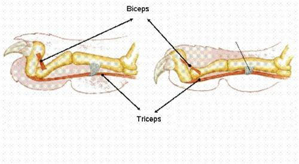

- HOME
- General
- Subdivision
- Looks
- Behaviour
- Senses
- Subspecies:
- Siberian tiger
- Bengal tiger
- Sumatran tiger
- Indochinese tiger
- South China tiger
- Caspian tiger
- Java tiger
- Bali tiger
- Hybrids:
- Liger
- Tigon
- Historisch:
- Saber tooth tiger
- Links


Relevant links:
- White tigers
More information about white tigers. - Black tigers
More information about black tigers.
Looks
1. The camouflage
2. The legs and claws
When people talk about the tiger, they often admire the power and beauty of this animal. So lets take a closer look to its 'packing'.
1. The camouflage
Most mammals have a camouflage to conceal themselves in their environment. This makes it more difficult to get spotted (both to hide for attackers and to creep up on prey). Because tigers live in dry forests or rainforests or mangrove, the orange colour seems to be perfect.
But why the stripes? A lion apparently doesn't need it.
The reason is the forest light, therefore the fur needs to be much more alternated; that's where the black stripes come in. The shape of these markings does not seem to matter much.
The stripes of a tiger are like fingerprints; they uniquely define a tiger. These stripes also repeat themselves in the skin of the tiger; if we would shave a tiger, the pattern would still be visible. Accordingly this unfortunate tiger will get the same pattern as before.
Not every tiger has an orange fur; there exists white and black tigers too (although the majority is orange). The colour of the fur is embedded in their genetics; in the wild, non-orange fur is a big disadvantage. More information about these genetics is given on the page about the white and black tigers.
Originally this 'abnormality' was only present in the genes of the Bengal tiger, but breeding programs in zoos show that these genes can be given through to other subspecies. In some zoos already live white Siberian tigers.
2. The legs
The legs of a tiger are essential to survive in the wild. He doesn't only need it to sprint, but also to sneak, to climb into trees, to fight...
To execute these actions without too much energy loss, the tiger has retractable claws.
